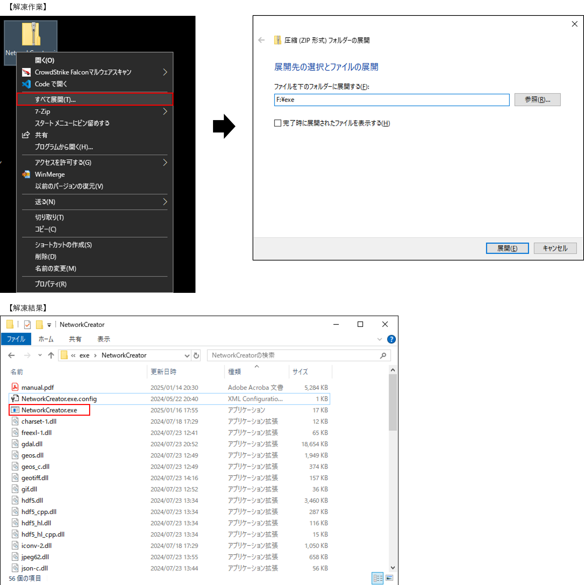
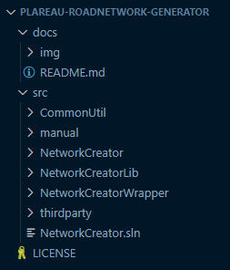
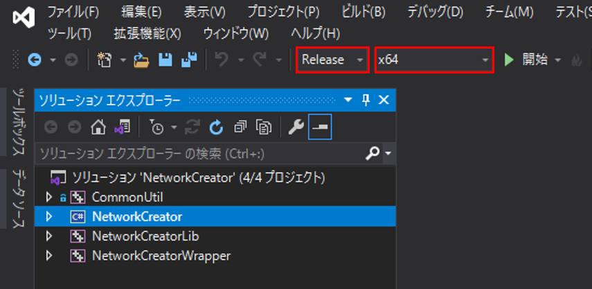
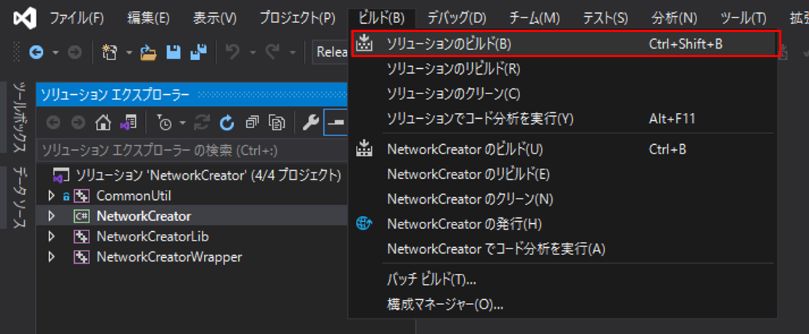
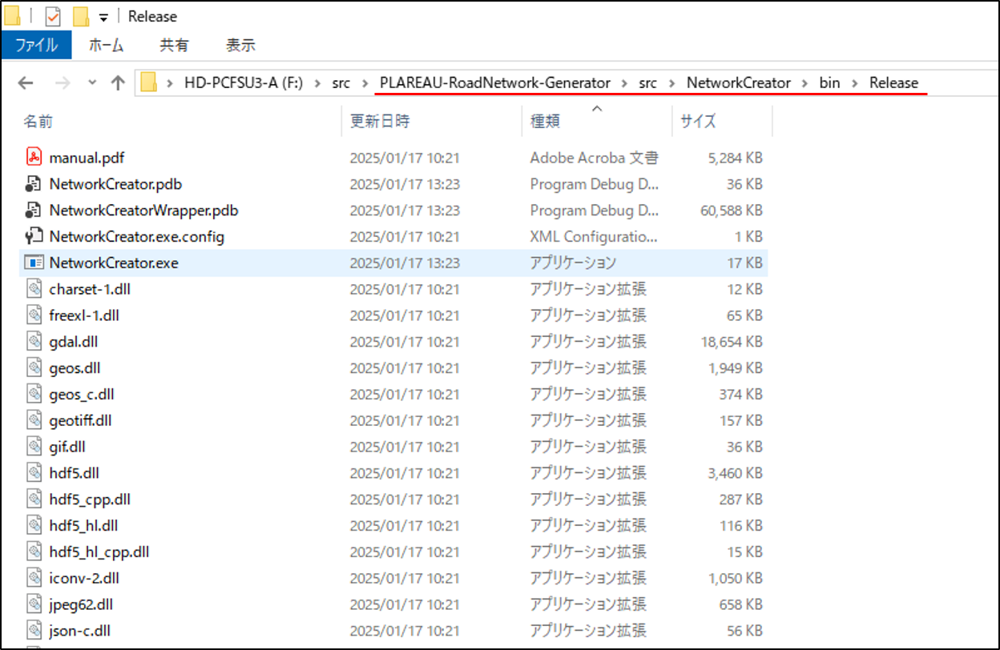

環境構築手順書
1 本書について
本書では、ネットワークデータ作成支援ツールの利用環境構築手順について記載しています。
ビルド済みの本ツール（exeファイル）を利用する場合は3 インストール手順を、
ソースコードからビルドして本ツールを利用する場合は【参考】ビルド手順を参照してください。
本ツールの構成や仕様の詳細については技術検証レポートも参考にしてください。
2 動作環境
本ツールの動作環境は以下のとおりです。
【LOD1、LOD2交通（道路）モデルからネットワークを作成する場合】
| 項目 | 最小動作環境 | 推奨動作環境 |
|---|---|---|
| OS | Microsoft Windows 10 または 11 | 同左 |
| CPU | Intel Core i5以上 | Intel Core i7以上 |
| メモリ | 8GB以上 | 16GB以上 |
| ネットワーク | 不要 | 同左 |
【LOD3交通（道路）モデルからネットワークを作成する場合】
| 項目 | 最小動作環境 | 推奨動作環境 |
|---|---|---|
| OS | Microsoft Windows 10 または 11 | 同左 |
| CPU | Intel Core i7以上 | 同左 |
| メモリ | 16GB以上 | 同左 |
| ネットワーク | 不要 | 同左 |
3 インストール手順
- こちら からアプリケーションをダウンロードします。
- ダウンロード後、zipファイルを右クリックし、「すべて展開」を選択することで、zipファイルを展開します。
- 展開されたフォルダ内の「NetworkCreator.exe」をダブルクリックすることで、アプリケーションが起動します。

【参考】 ビルド手順
自身でソースコードをダウンロードしビルドを行うことで、実行ファイルを作成することができます。
ソースコードは
こちら
からダウンロード可能です。
GitHubからダウンロードしたソースコードの構成は以下のようになっています。

- 本ツールのソリューションファイル（NetworkCreator.sln）をVisualStudio2019で開きます。
ソリューションファイルは、PLATEAU-RoadNetwork-Generator\srcに格納されています。 - 以下の赤枠部分のようにソリューション構成を【Release】に、ソリューションプラットフォームを【x64】に設定します。

- 以下の赤枠部分のように、[ソリューションのビルド]を選択し、ソリューション全体をビルドします。

- ビルドが正常に終了すると、ソリューションファイルと同じフォルダにあるNetworkCreator\bin\Releaseフォルダに実行ファイルが作成されます。
Releaseフォルダ内のファイル一式がアプリケーション実行時に必要なファイルです。